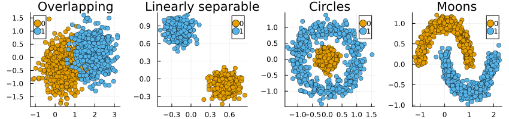

n = 1000
p = 2
# Linearly separable:
X, y = make_blobs(n, p; centers=2, center_box=(-2 => 2), cluster_std=0.1)
df = DataFrame(X)
df.target .= ifelse.(y.==1,0,1)
CSV.write(joinpath(data_path, "linearly_separable.csv"),df)
# Overlapping:
X, y = make_blobs(n, p; centers=2, center_box=(-2 => 2), cluster_std=0.5)
df = DataFrame(X)
df.target .= ifelse.(y.==1,0,1)
CSV.write(joinpath(data_path, "overlapping.csv"),df)
# Circles:
X, y = make_circles(n; noise=0.15, factor=0.01)
df = DataFrame(X)
df.target = y
CSV.write(joinpath(data_path, "circles.csv"),df)
# Moon:
X, y = make_moons(n)
df = DataFrame(X)
df.target = y
CSV.write(joinpath(data_path, "moons.csv"),df)2 Data Preprocessing
2.1 Generating Synthetic Data
generate_artifacts(data_path)catalogue = load_synthetic()
function plot_data(data,title)
plt = plot(title=uppercasefirst(replace(string(title),"_" => " ")))
scatter!(data)
return plt
end
plts = [plot_data(data,name) for (name, data) in catalogue]
plt = plot(plts..., layout=(1,4), size=(850,200))
savefig(plt, "paper/www/synthetic_data.png")
display(plt)
2.2 Preprocessing Real-World Data
2.2.1 California Housing Data
Fetching the data using Python’s sklearn (run this in the Python REPL):
from sklearn.datasets import fetch_california_housing
df, y = fetch_california_housing(return_X_y=True, as_frame=True)
df["target"] = y.values
data_path = "dev/artifacts/upload/data/real_world"
import os
if not os.path.isdir(os.path.join(data_path,"raw")):
os.makedirs(os.path.join(data_path,"raw"))
df.to_csv(os.path.join(data_path,"raw/cal_housing.csv"), index=False)Loading the data into Julia session.
df = CSV.read(joinpath(data_path, "raw/cal_housing.csv"), DataFrame)
# Target:
y = df.target
y = Float64.(y .>= median(y)); # binary target (positive outcome)
# Data:
df.target = yRandom undersampling to balance the data:
df_balanced = getobs(undersample(df, df.target; shuffle=true))[1]All features are continuous:
schema(df_balanced)┌────────────┬────────────┬─────────┐ │ names │ scitypes │ types │ ├────────────┼────────────┼─────────┤ │ MedInc │ Continuous │ Float64 │ │ HouseAge │ Continuous │ Float64 │ │ AveRooms │ Continuous │ Float64 │ │ AveBedrms │ Continuous │ Float64 │ │ Population │ Continuous │ Float64 │ │ AveOccup │ Continuous │ Float64 │ │ Latitude │ Continuous │ Float64 │ │ Longitude │ Continuous │ Float64 │ │ target │ Continuous │ Float64 │ └────────────┴────────────┴─────────┘
Feature transformation:
transformer = Standardizer(count=true)
mach = MLJBase.fit!(machine(transformer, df_balanced[:,Not(:target)]))
X = MLJBase.transform(mach, df_balanced[:,Not(:target)])
schema(X)┌────────────┬────────────┬─────────┐ │ names │ scitypes │ types │ ├────────────┼────────────┼─────────┤ │ MedInc │ Continuous │ Float64 │ │ HouseAge │ Continuous │ Float64 │ │ AveRooms │ Continuous │ Float64 │ │ AveBedrms │ Continuous │ Float64 │ │ Population │ Continuous │ Float64 │ │ AveOccup │ Continuous │ Float64 │ │ Latitude │ Continuous │ Float64 │ │ Longitude │ Continuous │ Float64 │ └────────────┴────────────┴─────────┘
Turning the data into CounterfactualData:
X = Matrix(X)
X = permutedims(X)
y = permutedims(df_balanced.target)
data = CounterfactualData(X,y)Saving the data:
CSV.write(joinpath(data_path, "cal_housing.csv"), df_balanced) # binary file
Serialization.serialize(joinpath(data_path,"cal_housing.jls"), data) # CounterfactualData2.2.2 Give Me Some Credit
Loading and basic preprocessing:
df = CSV.read(joinpath(data_path, "raw/cs-training.csv"), DataFrame)
select!(df, Not([:Column1]))
rename!(df, :SeriousDlqin2yrs => :target)
mapcols!(x -> [ifelse(x_=="NA", missing, x_) for x_ in x], df)
dropmissing!(df)
mapcols!(x -> eltype(x) <: AbstractString ? parse.(Int, x) : x, df)
df.target .= map(y -> y == 0 ? 1 : 0, df.target) # postive outcome = no delinquencyBalancing:
df_balanced = getobs(undersample(df, df.target;shuffle=true))[1]All features are continuous:
schema(df_balanced)Feature transformation:
transformer = Standardizer(count=true)
mach = MLJBase.fit!(machine(transformer, df_balanced[:,Not(:target)]))
X = MLJBase.transform(mach, df_balanced[:,Not(:target)])
schema(X)Turning the data into CounterfactualData:
X = Matrix(X)
X = permutedims(X)
y = permutedims(df_balanced.target)
data = CounterfactualData(X,y)Saving:
CSV.write(joinpath(data_path, "gmsc.csv"), df_balanced) # binary file
Serialization.serialize(joinpath(data_path,"gmsc.jls"), data) # CounterfactualData2.2.3 UCI Credit Card Default
Loading and basic preprocessing:
df = CSV.read(joinpath(data_path, "raw/UCI_Credit_Card.csv"), DataFrame)
select!(df, Not([:ID]))
rename!(df, "default.payment.next.month" => :target)
dropmissing!(df)
df.SEX = categorical(df.SEX)
df.EDUCATION = categorical(df.EDUCATION)
df.MARRIAGE = categorical(df.MARRIAGE)
mapcols!(x -> eltype(x) <: AbstractString ? parse.(Int, x) : x, df)
df.target .= map(y -> y == 0 ? 1 : 0, df.target) # postive outcome = no defaultBalancing:
df_balanced = getobs(undersample(df, df.target;shuffle=true))[1]Not all features are continuous:
schema(df_balanced)┌───────────┬───────────────┬─────────────────────────────────┐
│ names │ scitypes │ types │
├───────────┼───────────────┼─────────────────────────────────┤
│ LIMIT_BAL │ Continuous │ Float64 │
│ SEX │ Multiclass{2} │ CategoricalValue{Int64, UInt32} │
│ EDUCATION │ Multiclass{7} │ CategoricalValue{Int64, UInt32} │
│ MARRIAGE │ Multiclass{4} │ CategoricalValue{Int64, UInt32} │
│ AGE │ Count │ Int64 │
│ PAY_0 │ Count │ Int64 │
│ PAY_2 │ Count │ Int64 │
│ PAY_3 │ Count │ Int64 │
│ PAY_4 │ Count │ Int64 │
│ PAY_5 │ Count │ Int64 │
│ PAY_6 │ Count │ Int64 │
│ BILL_AMT1 │ Continuous │ Float64 │
│ BILL_AMT2 │ Continuous │ Float64 │
│ BILL_AMT3 │ Continuous │ Float64 │
│ BILL_AMT4 │ Continuous │ Float64 │
│ BILL_AMT5 │ Continuous │ Float64 │
│ BILL_AMT6 │ Continuous │ Float64 │
│ PAY_AMT1 │ Continuous │ Float64 │
│ PAY_AMT2 │ Continuous │ Float64 │
│ PAY_AMT3 │ Continuous │ Float64 │
│ PAY_AMT4 │ Continuous │ Float64 │
│ PAY_AMT5 │ Continuous │ Float64 │
│ PAY_AMT6 │ Continuous │ Float64 │
│ target │ Count │ Int64 │
└───────────┴───────────────┴─────────────────────────────────┘
Feature transformation:
transformer = Standardizer(count=true) |> ContinuousEncoder()
mach = MLJBase.fit!(machine(transformer, df_balanced[:,Not(:target)]))
X = MLJBase.transform(mach, df_balanced[:,Not(:target)])
schema(X)┌──────────────┬────────────┬─────────┐
│ names │ scitypes │ types │
├──────────────┼────────────┼─────────┤
│ LIMIT_BAL │ Continuous │ Float64 │
│ SEX__1 │ Continuous │ Float64 │
│ SEX__2 │ Continuous │ Float64 │
│ EDUCATION__0 │ Continuous │ Float64 │
│ EDUCATION__1 │ Continuous │ Float64 │
│ EDUCATION__2 │ Continuous │ Float64 │
│ EDUCATION__3 │ Continuous │ Float64 │
│ EDUCATION__4 │ Continuous │ Float64 │
│ EDUCATION__5 │ Continuous │ Float64 │
│ EDUCATION__6 │ Continuous │ Float64 │
│ MARRIAGE__0 │ Continuous │ Float64 │
│ MARRIAGE__1 │ Continuous │ Float64 │
│ MARRIAGE__2 │ Continuous │ Float64 │
│ MARRIAGE__3 │ Continuous │ Float64 │
│ AGE │ Continuous │ Float64 │
│ PAY_0 │ Continuous │ Float64 │
│ PAY_2 │ Continuous │ Float64 │
│ PAY_3 │ Continuous │ Float64 │
│ PAY_4 │ Continuous │ Float64 │
│ PAY_5 │ Continuous │ Float64 │
│ PAY_6 │ Continuous │ Float64 │
│ BILL_AMT1 │ Continuous │ Float64 │
│ ⋮ │ ⋮ │ ⋮ │
└──────────────┴────────────┴─────────┘
11 rows omitted
Categorical indices:
features_categorical = [
[2,3],
collect(4:10),
collect(11:14)
]Preparing for use with CounterfactualExplanations.jl:
X = Matrix(X)
X = permutedims(X)
y = permutedims(df_balanced.target)
data = CounterfactualData(
X, y;
features_categorical = features_categorical
)Saving:
CSV.write(joinpath(data_path, "credit_default.csv"), df_balanced) # binary file
Serialization.serialize(joinpath(data_path,"credit_default.jls"), data) # CounterfactualDatagenerate_artifacts(data_path)